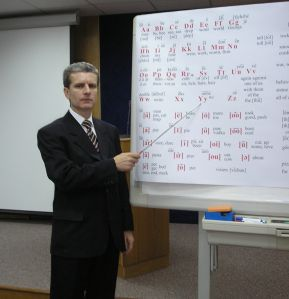

|
Как
Научить Себя Учиться и Обучать:
очные, очно-заочные и заочные блиц-курсы английского,
других иностранных языков и учебных дисциплин для студентов и преподавателей
Robin Robertson и Михаила Шестова - журналиста-международника, дипломанта и
эксперта Книг Рекордов Гиннесса и "Диво"
|
ОЧНЫЕ
И ЗАОЧНЫЕ КУРСЫ ДЛЯ СТУДЕНТОВ И ПРЕПОДАВАТЕЛЕЙ
|
Итак...
Вы приняли решение сделать первый шаг на пути к свободному владению английским
языком. Мы с радостью пройдем этот путь вместе с Вами. Наша миссия - дать Вам
возможность говорить на настоящем интеллигентном английском языке.
Вы можете выбрать наиболее удобный для Вас способ
обучения. Если Вы не располагаете достаточным количеством времени, чтобы
посещать очные занятия, у Вас есть уникальная возможность освоить навыки
английского языка не выходя из дома.
Вы можете приобрести первый бестселлер Рунета:
"Всеобъемлющий" курс "SupremeLearning English & Any Other Subject"
(в комплекте: 2 DVD, 3 CD в формате MP3, дополнительные материалы).
Что может быть лучше, чем посещение очных занятий?
Харизма автора методики, его необычайное умение обучать даже самых "необучаемых"
студентов позволяют сделать процесс обучения легким и увлекательным.

Для того, чтобы быстрее найти интересующую Вас
информацию, перейдите, пожалуйста, по соответствующим ссылкам:
ОЧНЫЕ
КУРСЫ АНГЛИЙСКОГО ЯЗЫКА В НЬЮ-ЙОРКЕ
Проводятся
по адресу: Wayward Ventures Publishing, лингвистический
консультационный центр Михаила Шестова и Robin Robertson,
3072 Brighton First Street, Brooklyn, NY 11235
(c 11 утра до 9 вечера, ежедневно).
Телефоны для справок: +1 (917) 208-7434 и +1 (917) 208-9964.
ВНИМАНИЕ! Cтоимость обучения изменилась. Смотрите
новый "Прейскурант"
Позволяет человеку
любого возраста, способностей и уровня знаний быстро освоить 'с нуля'
или многократно улучшить свой уровень владения современным английским
языком (через одновременное, "комплексное" изучение или совершенствование
письменной и устной форм языка, развитие способностей свободного восприятия
на слух и понимания текстов повышенной сложности) +
безусловно освоить принципы системы "Как Научить
Себя Учиться" (обеспечивающей многократное повышение эффективности
и качества процесса (само)обучения любому навыку или учебному предмету, преподаваемому
или изучаемому на английском или русском языке). Курс уникален тем,
что результаты гарантируются письменно [в договоре с учеником, предусмотрен
100% возврат платы за обучение, если по окончании курса не были достигнуты предварительно
оговоренные конкретные результаты].
В
2013 году проводятся два основных варианта
"Универсального" курса (подробнее, см. на странице "Прейскурант"):
1. "Всеобъемлющий".
Для лиц, желающих освоить грамотный интеллигентный английский "с нуля" или быстро
усовершенствовать какие-либо (или все основные) его формы, вплоть до уровня
среднего или образованного носителя языка и освоить машинопись по методу Шестова
Полная стоимость данного
варианта курса: $854 ($390 вносятся авансом, последующие выплаты
производятся в сроки, согласованные с администратором в индивидуальном порядке).
Внимание! Только в течение этого месяца, льготная [с 30%-ной скидкой] стоимость курса: $635 (для тех, кто в течение недели, после первого контакта с нашими сотрудниками, произвел предоплату в полном размере) и $698 (для тех, кто в течение недели, после первого контакта с нашими сотрудниками, внес залог ("депозит") в размере $50).
Продолжительность:
100 астрономических часов, в течение индивидуально обговариваемого срока. Занятия
индивидуальные или групповые (2-4 человека), в зависимости от гибкого персонального
графика посещений, согласованного с администратором.
Каждому обучающемуся
бесплатно выдаются аудиоматериалы "Всеобъемлющего" заочного
курса (на компакт-дисках в формате MP3) и "Базовый сборник" текстов.
В программу курса входит
("факультативно", то есть - по желанию студента) освоение "английской"
(латинской) или русской, "слепой", скоростной и безошибочной десятипальцевой машинописи (многократно ускоряющей и облегчающей изучение и совершенствование любого
языка), по методу Михаила Шестова.
Подробности по бесплатным
(toll-free) телефонам: +1 (800) 557-7763, +1 (888)
259-7401, +1 (888) 532-7677, +1 (800) 880-2287
или по городским: +1 (917) 208-7434, +1 (917) 208-9964. Также, см. Регистрация
абитуриентов и дополнительная информация.
2. "Базовый". Для лиц, желающих поставить или улучшить свое произношение,
сформировать или усовершенствовать навыки устной речи, расширить словарный запас,
развить навыки понимания на слух, чтения вслух "с листа" любых текстов и т.п.
Предназначен: как для начинающих "с нуля" (с тем, чтобы после прохождения курса
продолжить обучение: a) по "Всеобъемлющему" очному курсу, b) по нашим материалам
для заочно-самостоятельных занятий или c) в любом другом учебном заведении),
так и для "продолжающих" (обеспечивает формирование стойких навыков самостоятельного
совершенствования в английском)
Полная стоимость данного
варианта курса: $328 (вносятся авансом).
Внимание! Только в течение
этого месяца, льготная стоимость курса: $235 (для тех, кто в течение недели,
после первого контакта с нашими сотрудниками, внес депозит в размере $50 или
произвел предоплату в полном размере).
Продолжительность:
16 астрономических часов, в течение индивидуально обговариваемого срока. Занятия
индивидуальные или групповые (2-4 человека), в зависимости от гибкого персонального
графика посещений, согласованного с администратором.
Каждый обучающийся по
"Базовому" курсу имеет возможность приобрести "Базовый сборник" текстов и аудиоматериалы
"Всеобъемлющего" заочного
курса со скидкой: a) на компакт-дисках в формате MP3 - за $50, b) на
аудиокассетах - за $113.
Подробности по бесплатным
(toll-free) телефонам: 1-888-259-7401, 1-888-532-7677,
1-800-880-2287, 1-800-557-7763 или по городским: +1
(917) 208-7434, +1 (917)
208-9964. Также, см. Регистрация
абитуриентов и дополнительная информация.
Примечания
-
Проезд в Нью-Йорк, проживание, питание и т.д. оплачиваются самими студентами.
-
Так как, из числа последних
двадцати студентов, направленных на обучение одним из наших представителей в СНГ,
газетой "Iностранец", четырнадцать не прошли собеседование в американских
консульствах (по таким причинам, как: молодой возраст, семейное положение,
отсутствие работы), в данное время, мы обеспечиваем бесплатными приглашениями
в США только тех абитуриентов, которые смогут пройти собеседование.
-
Минимальные размеры
первого взноса (при зачислении на любой вариант очного курса) установлены
нами потому, что именно первые занятия несут на себе наибольшую информационно-познавательную
нагрузку и являются "постановочными".
-
Дополнительные скидки
предоставляются только по результатам тестирования и утверждаются администратором.
Предоставляются "семейные"
(при совместном посещении всех занятий родственниками или знакомыми) и другие
скидки. Стоимость вышеприведенных
вариантов "Универсального" курса будет изменяться только в сторону увеличения.
Поэтому, если Вы желаете сохранить за собой возможность прохождения выбранного
Вами варианта курса в удобное для Вас [естественно, согласованное с нами]
время и по вышеуказанным ценам* [см. ниже], Вам необходимо, в течение
недели, после первого контакта с нашими сотрудниками:
a) внести депозит (аванс)
в сумме $50, наличными или
b) приобрести "Базовый"
или "Практический курс" для самостоятельных занятий (cм. страницу "Прейскурант
и описание курсов").
-
Обучение (освоение
фонетики, практической грамматики, стилистики, спелленга и т.п.) проводится
по аудио-, видео- и др. материалам Михаила Шестова, лично Михаилом Шестовым
или авторизованными преподавателями-консультантами.
-
Михаил Шестов принимает активное участие
в обучении только тех студентов, которые внесли плату за конкретный вариант курса авансом, в полном объеме.
Так как, по его мнению, именно оплата вперед гарантирует безупречное внимание и дисциплинированное поведение
ученика, что, в свою очередь, гарантирует ему достижение высочайших конечных результатов.
-
Стоимость пробного
урока (до приобретения любого курса для самостоятельных занятий или
зачисления на очные занятия) продолжительностью 1,5-2 часа=$50.
При последующем зачислении на любой из вариантов "Универсального"
курса, эта сумма полностью учитывается.
-
Стоимость "частных"
(индивидуальных - один-на-один с преподавателем) уроков (для взрослых и
детей - в возрасте от 7 лет): первые два двухчасовых занятия - $25
в час. В дальнейшем - по договоренности с администратором или преподавателем:
$10 (при занятиях только по нашим материалам, под "легким присмотром"
преподавателя), $15-25 в час (в зависимости от уровня интенсивности
работы преподавателя и др. факторов). Стоимость индивидуальных занятий с Михаилом Шестовым - от $250 в час.
-
Если Вы приобрели
"Всеобъемлющий" курс для самостоятельных занятий (см. страницу www.supremelearning.com/russianpricelist.html),
Вы можете, в течение 3-х месяцев после приобретения курса, за дополнительную
плату в размере $100, посетить пять двух-трехчасовых "вводных", "дисциплинирующих",
"установочных" очных консультаций.
-
Cтоимость факультативных
очных занятий по материалам "консерваторского" уровня (произведениям
современных американских писателей, "Мастеру и Маргарите" М.А.Булгакова
и т.п.), не входящим в "Универсальный" [очный] курс или не используемым
во "Всеобъемлющем" курсе [для самостоятельных занятий]=$10 за астрономический
час. Минимальный размер предоплаты=$100, затем - $20 за каждое двухчасовое
занятие. Занятия рекомендуются тем, кто (уже) не нуждается в постановке
(улучшении) произношения.
-
Cтоимость факультативного
курса русской и 'английской' (латинской) "слепой" скоростной
и безошибочной десятипальцевой машинописи (многократно ускоряющей и облегчающей
изучение и совершенствование любого языка) по методу Михаила Шестова, продолжительностью
приблизительно 20 астрономических часов=$298. Оплата вносится
авансом.
При оплате чеком вносится
залог $30, а к прохождению очных практических консультаций такой студент
SupremeLearning может приступить только через 3-5 дней, после того, как его
чек "прошел" через наш банк.
ОЧНЫЙ МАСТЕР-КЛАСС И БЛИЦ-КУРСЫ АНГЛИЙСКОГО ЯЗЫКА "ПОСТАНОВКА ПРОИЗНОШЕНИЯ - СКОРОСТНОЕ РАЗВИТИЕ
НАВЫКОВ ВЕДЕНИЯ РАЗГОВОРА" И МАШИНОПИСИ В МОСКВЕ
Мастер-классы проводятся, а блиц-курсы курируются лично Михаилом Шестовым, который,
в последние годы, обучает только VIP-клиентов (в разных странах мира). Регистрация
слушателей производится только по факту внесения частичной или полной предоплаты и результатам тестирования.
Подробная информация о блиц-курсах: программе и условиях обучения находится
здесь. С запросами на дополнительную информацию о следующем наборе и условиях обращайтесь в центральный
офис (через "Форму
обратной связи") или к членам группы координаторов Международного лингвистического
центра Михаила Шестова по телефонам
в Москве: +7 (495) 650-3205, +7 (495) 961-5509, +7 (926) 216-0242, через Skype.com (бесплатное голосовое общение через интернет + чат; наши "ники":
mshestov, shestov.com, waywardventures и fastenglish) или
по электронной почте: SupremeLearning@yahoo.com
Запись на тестирование, очные или телефонные консультации производится по телефонам: +7 (495) 650-3205, +7 (495) 799-3152, +7 (495) 961-5509 и +7 (926) 216-0242.
Приглашаем к сотрудничеству владельцев помещений в Москве, например, на бартерных условиях: авторизованные преподаватели системы SupremeLearning проводят обучение Ваших студентов - Вы, параллельно, предоставляете возможность заниматься нашим студентам. С предложениями обращайтесь по телефонам: +7 (495) 650-3205, +7 (495) 961-5509 и +7 (926) 216-0242 или через "Форму обратной связи" к Михаилу Юрьевичу Шестову.
ВНИМАНИЕ! ОТКРЫТЫ АВТОРСКИЕ ШКОЛЫ МИХАИЛА ШЕСТОВА В ЛОС-АНДЖЕЛЕСЕ И САН-ФРАНЦИСКО! НА РЕГУЛЯРНОЙ ОСНОВЕ ПРОВОДЯТСЯ БЕСПЛАТНЫЕ
СЕМИНАРЫ "ПОСТАНОВКА ПРОИЗНОШЕНИЯ - СКОРОСТНОЕ РАЗВИТИЕ НАВЫКОВ ВЕДЕНИЯ
РАЗГОВОРА" И ОЧНЫЕ БЛИЦ-КУРСЫ АНГЛИЙСКОГО ЯЗЫКА
Производится
предварительная регистрация желающих посетить бесплатные семинары Михаила Шестова, приобрести заочный курс
или записаться на очные блиц-курсы в Лос-Анджелесе и Сан-Франциско
После
успешного проведения в Лос-Анджелесе бесплатного семинара
и очных блиц-курсов, было принято решение основать Авторские
Школы Михаила Шестова в Лос-Анджелесе и Сан-Франциско. Подробная
информация о месте и времени проведения семинаров и курсов
публикуется в калифорнийской русскоязычной прессе. Образец
приглашения на первый калифорнийский семинар Михаила Шестова
(в формате PDF) находится здесь.
Заявки
на дополнительную информацию и регистрацию, направляйте через
"Форму
обратной связи". Справки по телефонам:
1-888-259-7401 (бесплатный для жителей США и Канады)
и городскому: 1-917-208-7434.
ОЧНЫЕ И ЗАОЧНЫЕ КУРСЫ ДЛЯ ЖЕЛАЮЩИХ ПОЛУЧИТЬ ЛИЦЕНЗИЮ НА ПРЕПОДАВАНИЕ АНГЛИЙСКОГО ЯЗЫКА/РЕПЕТИТОРСКУЮ ДЕЯТЕЛЬНОСТЬ ПО БАЗОВОМУ ВАРИАНТУ СИСТЕМЫ SUPREMETEACHING
Продолжительность курса SupremeTeaching:
от 2 недель до 2,5 месяцев (в зависимости от общеобразовательного уровня
кандидата в авторизованные преподаватели-консультанты и/или
выбранного им варианта прохождения курса SupremeTeaching).
Варианты прохождения курса SupremeTeaching:
-
очный [стандартная процедура]: a) абитуриент (или его организация), до или после прибытия в Нью-Йорк, вносит предоплату; b) в течение 2 недель, кандидат в преподаватели проходит обучение и практику, по завершении которых, ему вручается лицензия.
-
заочный [стандартная процедура] - абитуриент: a) заказывает материалы "Всеобъемлющего" курса (cм. страницу "www.supremelearning.com/russianpricelist.html"); b) в течение одного-двух месяцев, в точном соответствии с письменными и устными рекомендациями Михаила Шестова, занимается по материалам курса; с) согласовав персональный график занятий по преподавательской программе, вносит плату за обучение и лицензию; d) в течение 2 недель, проходит инструктаж (по телефону или по электронной почте), по завершении которого, ему вручается (высылается) лицензия.
График занятий:
согласовывается в индивидуальном порядке.
Стоимость курса SupremeTeaching:
-
для частных лиц - символическая - одноразовый взнос в сумме $2000.
-
для представителей госучреждений и вузов Российской Федерации - одноразовый взнос в сумме $3000.
-
для представителей госучреждений других стран СНГ и "ближнего зарубежья" - одноразовый взнос в сумме $5000.
-
для любых других организаций - одноразовый взнос в сумме $10000.
Стоимость лицензии:
-
для частных лиц - символическая - $1000 в год (вноситcя авансом).
-
для представителей госучреждений и вузов Российской Федерации - $2000 в год (вносится авансом).
-
для представителей госучреждений других стран СНГ и "ближнего зарубежья" - $3000 в год (вносится авансом).
-
для любых других организаций - $5000 в год (вносится авансом).
Требования к абитуриентам:
-
хороший уровень владения письменной и устной формами русского или другого языка, на котором конкретный абитуриент планирует вести обучение студентов.
-
высокий уровень исполнительности.
-
ответственное отношение к учебе и обучению.
Уровень профессиональной подготовки абитуриентов:
значения не имеет.
Примечания. Регистрация кандидатов проводится по телефону, факсу, почте, email или лично (см. ниже).
Первому лицензированному преподавателю из каждого города или населенного пункта передаются все заявки на очное обучение, поступающие к Михаилу Шестову из его региона .
Всем лицензированным преподавателям обеспечивается бесплатная рекламно-информационная поддержка.
По поводу согласования других вариантов обучения, способов оплаты (например, на бартерной основе), предоставления дополнительных скидок, обращаться по телефону, факсу, почте, email или лично (см. ниже).
Подготовка авторизованного преподавателя и выдача лицензии на преподавательскую или репетиторскую деятельность производятся только в комплексе.
ОЧНЫЕ КУРСЫ ДЛЯ ПРЕПОДАВАТЕЛЕЙ ИНОСТРАННЫХ ЯЗЫКОВ И ЛИЦ, ХОРОШО ВЛАДЕЮЩИХ КАКИМ-ЛИБО ЯЗЫКОМ(АМИ), ЖЕЛАЮЩИХ ПОЛУЧИТЬ ЛИЦЕНЗИЮ НА ОБУЧЕНИЕ СТУДЕНТОВ С ПРИМЕНЕНИЕМ ЭЛЕМЕНТОВ СИСТЕМЫ SUPREMETEACHING
Продолжительность курса SupremeTeaching Any Language:
3-4 недели (в зависимости от общеобразовательного
уровня кандидата).
Место проведения занятий:
в
2013 году курсы проводятся только в Нью-Йорке и Москве.
Способ стажировки и получения лицензии:
-
очный [стандартная процедура: a) абитуриент (или его организация), до или после прибытия в Нью-Йорк, вносит предоплату; b) в течение 2 недель, проходит обучение и практику, по завершении которых, ему вручается лицензия].
График занятий:
согласовывается в индивидуальном порядке.
Стоимость курса SupremeTeaching:
-
для частных лиц - символическая - одноразовый взнос в сумме $2000.
-
для представителей госучреждений и вузов Российской Федерации - одноразовый взнос в сумме $3000.
-
для представителей госучреждений других стран СНГ и "ближнего зарубежья" - одноразовый взнос в сумме $5000.
-
для любых других организаций - одноразовый взнос в сумме $10000.
Примечание: каждому абитуриенту бесплатно выдаются или высылаются все необходимые материалы и учебно-методические пособия.
Стоимость лицензии:
-
для частных лиц - символическая - $1000 в год (вноситcя авансом).
-
для представителей госучреждений и вузов Российской Федерации - $2000 в год (вносится авансом).
-
для представителей госучреждений других стран СНГ и "ближнего зарубежья" - $3000 в год (вносится авансом).
-
для любых других организаций - $5000 в год (вносится авансом).
Требования к абитуриентам:
-
хороший уровень владения письменной и устной формами русского и другого языка, обучение которому проводит (будет проводить) конкретный абитуриент.
-
высокий уровень исполнительности.
-
ответственное отношение к учебе и обучению.
Уровень профессиональной подготовки абитуриентов:
значения не имеет.
Примечания. Регистрация кандидатов проводится по телефону, факсу, почте, email или лично (см. ниже).
Первому лицензированному преподавателю из каждого города или населенного пункта передаются все заявки на очное обучение, поступающие в наше издательство из его региона.
Всем лицензированным преподавателям бесплатно обеспечивается рекламно-информационная поддержка.
Возможны другие варианты оплаты и скидки.
Подготовка авторизованного преподавателя и выдача лицензии на обучение производятся только в комплексе.
БЕСПЛАТНЫЕ
СЕМИНАРЫ НА ТЕМЫ:
"КАК НАУЧИТЬ СЕБЯ ЭФФЕКТИВНО УЧИТЬСЯ ИЛИ ОБУЧАТЬ"
(ЛЮБОЙ НАВЫК ИЛИ УЧЕБНЫЙ ПРЕДМЕТ) и
"КАК БЫСТРО ВЫУЧИТЬ АНГЛИЙСКИЙ"
В течение 2013 года, Михаил Шестов проводит (на постоянной
основе) бесплатные однодневные семинары только в Нью-Йорке,
Лос-Анджелесе, на Сейшелах и в Москве. В случае его
отсутствия, слушателям демонстрируется видеозапись последнего
семинара.
Бесплатные телефоны для справок в США: 1-888-259-7401, 1-800-557-7763,
1-800-880-2287, 1-888-532-7677 (мы оплачиваем стоимость
междугородных звонков), обычные (Вы оплачиваете стоимость
звонков, по городским или междугородным тарифам Вашей телефонной
компании) городские телефоны: 1-917-208-7434,
1-917-208-9964; fax: 1-253-981-1477.
Телефон в Москве: +7 (495) 961-5509.
Примечание.
Имена индивидуумов, которые зарегистрировались на участие в конкретном семинаре,
но не явились в назначенный день и час или заранее не поставили нас в известность
о том, что они не смогут принять в нем участие, заносятся в специальный список
лиц, которые на подобные мероприятия больше не приглашаются. Естественно, такого
рода недисциплинированным слушателям не предоставляется никаких скидок со стоимости
очных или заочных курсов SupremeLearning.
РЕГИСТРАЦИЯ
И
ДОПОЛНИТЕЛЬНАЯ ИНФОРМАЦИЯ
Предварительная
регистрация: (единственный способ
сохранить за собой стоимость конкретного курса и получить
право на периодически предоставляемые дополнительные скидки
со стоимости очных или заочных курсов для студентов),
запись на курсы, справки и консультации (7 дней в неделю)
- 1-888-259-7401, 1-800-557-7763, 1-888-532-7677 (toll-free
- бесплатные: только для жителей США) или 1-800-880-2287
(toll-free - бесплатный: только для жителей США и Канады),
по нью-йоркским: 1-917-208-7434,1-917-208-9964
[мобильные телефоны Эмилии Бальмонт и Айрин Сафроновой] или
по почте:
"Wayward
Ventures Publishing 3072 Brighton First Street, Brooklyn, NY 11235 (USA)" или "Wayward Ventures Publishing 79 Pine Street #188, New York, New York, 10005 (USA)", или
через "форму
обратной связи",
или по
факсу: 1-253-981-1477, или лично
[тем, кто не смог с нами связаться по телефону или факсу, а посетил нас лично, автоматически предоставляется
дополнительная скидка в размере $10 от стоимости любого курса
для студентов], по адресу: Wayward Ventures
Publishing, 3072 Brighton First Street, Brooklyn, NY 11235 (USA), c 12 утра до 9 вечера, ежедневно.
Примечание:
здание расположено в Нью-Йорке, в районе Бруклина - "Brighton Beach". Проезд на метро: линия Q - до станции
Ocean Parkway. Занимающиеся
очно или самостоятельно (заочно) обязуются максимально точно
следовать простым рекомендациям автора методики (согласно
общим для всех правилам), приведенным в его книгах, учебных
пособиях и других информационных материалах. В противном случае,
высокие конечные результаты не гарантируются. Prices
& conditions are subject to change without notice. We
reserve the right to deny service, phone consultation or product
sale to anyone at our own discretion at any time. Clients
attending practical consultations must follow all verbal and
written rules and recommendations of Wayward Ventures Publishing
representatives or may be denied access to its premises. SupremeLearning
educational materials may not be returned for a refund; they
may only be exchanged for materials of the same kind.
ДЕЛОВОЕ СОТРУДНИЧЕСТВО И
СОВМЕСТНЫЕ ПРОЕКТЫ
Если:
-
Вы заинтересованы в проведении международного маркетинга или локальном распространении учебно-методических материалов SupremeLearning [требуются неэксклюзивные представители и преподаватели-консультанты, практически в каждом населенном пункте мира]; или
-
лично Вы (или Ваши партнеры и т.п.) хотели бы организовать очные курсы SupremeLearning или личный семинар Шестова на одну из тем (более 30; список готовится к публикации, а в данное время, высылается по индивидуальным заявкам), по которым он регулярно выступает; или
-
у Вас есть конкретные предложения о партнерском сотрудничестве в области перевода книг Шестова и других учебно-методических материалов SupremeLearning на любые языки мира и их "локализации" (адаптации базовых текстов к культурно-историческим традициям конкретного государства и т.п.); или
-
Вы хотели бы попросить Шестова начитать* на "компакт-диски", видео- или аудиокассеты Ваши (или других авторов) книги или учебно-методические материалы по изучению "с нуля" или совершенствованию в любом навыке или учебном предмете [*в соответствии с принципами системы SupremeLearning: на замедленных скоростях, следуя различным ритмам, громкости и т.п., гарантирующими прочное усвоение информации студентами любого возраста, способностей и уровня знаний]; или
-
у Вас есть интересные идеи или предложения по применению элементов системы SupremeTeaching к обучению или совершенствованию в языках, других интеллектуально-моторных навыках (которые Вы знаете досконально, но не понимаете как обеспечить эффективную передачу Вашего профессионального опыта другим) и хотите, на партнерских отношениях, разработать новую методику обучения и т.п.; или
-
Вы автор интересной книги, любой нетрадиционной "полезной" технологии, изобретения, методики, проекта и хотели бы, например, обратиться к Шестову с просьбой о выделении Вам (на одном из наших "интернетовских ресурсов") отдельной страницы для международной (на многих языках) презентации Вашего интеллектуального или индустриального "продукта" и т.д. или широком распространении (продаже) Вашего продукта, через безопасные, не контролируемые "структурами" системы международной коммерции; и т.д.,
пожалуйста,
обращайтесь через "форму
обратной связи" или по адресам: info@supremelearning.com
или info@learnhowtolearn.com,
или по телефону: +7 (926) 216-0242 - к Михаилу Шестову.
Приложение:
Образец заявки
(публикуется с разрешения автора)
7 августа 2011
года
Уважаемый Михаил Шестов!
Я изучаю английский язык по Вашей методике, приобрел Вашу программу.
Изучив Вашу методику, я четко осознал, что Ваши программы предполагают, в частности, необходимость максимальной концентрации
внимания в процессе обучения.
Это очень подходит под мое изобретение: метод тренировки памяти для работы мозга в режиме максимального внимания
с использованием карманного тренажера. Этот метод основан на естественной, генетически запрограммированной способности
человека к обучению.
Разработанный мною тренажер памяти позволяет обучить работать мозг в режиме максимального внимания при приеме (запоминании)
и безошибочной выдаче (повторении) условной информации.
Систематические тренировки на тренажере вырабатывают устойчивый навык (условный рефлекс) максимальной концентрации внимания для запоминания и выдачи нужной смысловой информации за минимальное время. Я изготовил опытную модель карманного тренажера (размер 130 x 40 мм). Он прост по конструкции и удобен в работе.
Предлагаемая методика, по моему мнению, существенно расширяет возможности мозга человека, в частности, при изучении иностранных
языков, но может также найти широкое применение при любых видах обучения.
Я обращаюсь к Вам с предложением о сотрудничестве для применения указанного метода в Вашей методике изучения иностранных
языков, а также для возможного широкого внедрения метода в других областях.
Немного о себе. Я житель Филадельфии пенсионного возраста.
В Америке я с 1993 г. В прошлом я штурман дальней авиации, художник и, вплоть до настоящего времени, изобретатель. В изобретательском деле мне помогает мой сын, к.т.н., проживающий
в зоне Нью-Йорка.
Мой адрес:
Albert Timashov
1921 Nester Pl., Apt. 10
Philadelphia, PA 19115
телефон: 1-215-969-4516
e-mail: gregtimash@yahoo.com
C уважением
(подпись) Альберт Тимашов
ОБЪЯВЛЕНИЯ
ТРЕБУЕТСЯ
ПРОГРАММИСТ, ЖУРНАЛИСТЫ И ПАРТНЕРЫ ПО РАСШИРЕНИЮ НОВОГО ИНФО-ПОРТАЛА ШЕСТОВА
ПРИГЛАШАЮТСЯ:
ДЕЛОВАЯ ЖЕНЩИНА-ПАРТНЕР, ПРЕДСТАВИТЕЛИ И ДИЛЕРЫ-РАСПРОСТРАНИТЕЛИ В ЛЮБЫХ РЕГИОНАХ МИРА; ПОМОЩНИЦА-УЧЕНИЦА
МЕНЕДЖЕРА, АДМИНИСТРАТОРА, ПРЕПОДАВАТЕЛЯ-КОНСУЛЬТАНТА (ЦЕНТРАЛЬНОГО ОФИСА В
НЬЮ-ЙОРКЕ) и
МЕНЕДЖЕРЫ В ЧИКАГО, МАЙАМИ И ЛОС-АНДЖЕЛЕСЕ
Приглашаются
журналисты, предприимчивые партнеры, все заинтересованные лица для расширения
сфер деятельности нового международного информационного портала-газеты Михаила
Шестова: SupremeLearning Times™, "Здравый
смысл", www.supremelearning.ru (предназначенного,
в первую очередь, для ищущих пути самореализации и самосовершенствования). Образцы
дизайна подобных проектов: allbest.ru и russianny.com Приветствуются любые интересные
предложения. Обращаться по электронной почте: portal@supremelearning.com или
через форму
обратной связи.
Как
стать дилером или представителем в Киеве, Владивостоке, Пекине и др. городах
стран бывшего Советского Союза и мира? Очень просто. Для этого нужно приобрести
не менее трех комплектов "Всеобъемлющего" курса, по специальной оптовой цене
для дилеров. Координаты распространителя будут размещены на наших сайтах. Дилер
также получает рекламную поддержку в национальной прессе. Михаил Шестов и опытные
преподаватели-консультанты системы SupremeLearning, в согласованные сроки, проведут
очные блиц-курсы английского, русского, французского, испанского, немецкого, датского и т.п. языка или семинары, в любом регионе мира, на темы "Как научиться
учиться" и "Как быстро выучить любой язык". Наши сотрудники всегда рады поделиться
опытом организации и ведения бизнеса. С запросами на дополнительную информацию
и бесплатные телефонные консультации, обращаться по электронной почте: regrep@supremelearning.com
или через форму
обратной связи. Приглашается, на конкурсной основе: помощница-референт (в ближайшей перспективе - партнер) М.Шестова: интеллигентная, академически образованная, адекватно мыслящая, позитивная, интересная (симпатичная) и стройная деловая женщина, которой действительно интересна тематика нашей работы и просветительской деятельности + незамужняя и бездетная (в работе случаются авралы, но размер вознаграждения компенсирует этот недостаток), в возрасте от 20 до 35 лет. Наличие экстраординарных организационно-исполнительских способностей, инвестиционных возможностей или желания постоянно совершенствоваться обязательно. Обязанности (вкратце) курирование всей международной деятельности по оптовому и розничному распространению курсов, подготовке авторизованных преподавателей и т.п. Цель: достичь почти полной взаимозаменяемости.
А также, ученицы менеджера, администратора и преподавателя-консультанта
(на полный/неполный рабочий день) в центральный офис (Нью-Йорк
- Бруклин) славянского отдела издательства Wayward Ventures
Publishing, которые желали бы освоить одну из вышеперечисленных
специальностей, с последующим трудоустройством. В период работы-обучения,
обязательно совершенствование английского по нашему методу
(естественно, бесплатно). Возраст и образовательный уровень
особого значения не имеют, т.к. инструктаж проводится с нуля.
Обязанности (вкратце): поддержание дисциплины и порядка в
помещениях Международной Лингвистической Академии Михаила
Шестова, в любом регионе мира, запись и консультирование студентов
(лично и по электронной почте), упаковка и отправка учебных
материалов, курирование региональных дилеров и т.п. Возможно
временное проживание в офисе (для иногородних или находящихся
далеко от офиса). Обучение проводится по адресу: Wayward Ventures
Publishing 3072 Brighton First Street, Brooklyn, NY 11235. Длительность обучения: 2-4 недели. Возраст и образовательный уровень особого значения не имеют, так как инструктаж проводится
"с нуля". Отсутствие детей - большой плюс. Отсутствие супругов
или друзей, работающих "менеджерами" потенциальных
сотрудниц - еще больший плюс. :) Почасовая оплата ($6-$15
в час, наличными), в период обучения, за конкретную работу.
Система оплаты (по завершении обучения): зарплата + процент
от прибыли или только зарплата. Вышлите краткую автобиографию
через "форму
обратной связи" или полную - по трем адресам: info@supremelearning.com,
info@learnhowtolearn.com
и info@learnhowtolearnandteachfast.com,
по факсу (см. выше), по почте (предпочтительнее, адрес см.
выше) или позвоните лично Михаилу Юрьевичу, по телефонам:
1-888-259-7401, 1-800-557-7763, 1-800-880-2287, 1-877-466-7925 (бесплатные для жителей США и Канады) или +7 (926)
216-0242, 1-917-208-7434 & 1-917-208-9964 (обычные
городские номера). Требуются
менеджеры русских отделов наших представительств в Лос-Анджелесе,
Чикаго и Майами (см. выше)...
Вышлите краткую автобиографию через "форму
обратной связи", по факсу (см. выше), по почте (предпочтительнее,
адрес см. выше) или позвоните лично Михаилу Юрьевичу, по телефонам:1-888-259-7401,
1-800-880-2287, 1-800-557-7763, 1-877-466-7925 (бесплатные
для жителей США и Канады) или +7 (926) 216-0242, 1-917-208-7434
(из любой страны, включая США).
Приглашаем
на работу независимого, интеллигентного программиста c навыками
менеджера или менеджера наших ресурсов интернета с задатками
программиста (пол и возраст значения не имеют) - специалиста
по "подводным камням" российского и международного (but that
is a secondary matter) интернета, хорошо разбирающегося: в
секретах хакеров, ISP's, поисковых машин и каталогов, в способах
"регулирования буржуйских (к каковым, обычно и огульно причисляется
все, что заканчивается на ".com".) сайтов" через "illegal
re-direct of the legitimate visitors", "creation of the fake
pages", обмен баннерами и тому подобные вынужденные "хитрости",
спровоцированные, например, узкими каналами выхода из России
в интернет - через Швецию (и кто знает, через что еще). You
get the idea... Мы предлагаем такому специалисту работу на
следующих уcловиях: определенный процент от суммы продаж любых
товаров и услуг через наши ресурсы интернета или фиксированная
зарплата. Кандидат может проживать в любой стране мира. Любому
нашему сотруднику, консультанту и членам его семьи предоставляется
право на бесплатное прохождение любых курсов для студентов.
Кандидат обязуется выполнять возложенные на него обязанности
менеджера и консультировать наших сотрудников или американских
программистов (в среднем, "пару часов в день", хотя возможны
и авралы) по любым вопросам, которые у них могут возникнуть
и в которых он разбирается. Перевод зарплаты ("комиссионных")
любым способом и в любом виде (наличные, безналичные и т.п.).
Предложения (в том числе, встречные) направляйте через "форму
обратной связи",
по факсу (см. выше), по почте (предпочтительнее, адрес см.
выше) или позвоните лично Михаилу Юрьевичу, по телефонам:
1-888-259-7401, -800-557-7763, 1-800-880-2287, 1-877-466-7925 (бесплатные для жителей США) или +7 (926) 216-0242, 1-917-208-7434 (из любой страны, включая США).
|